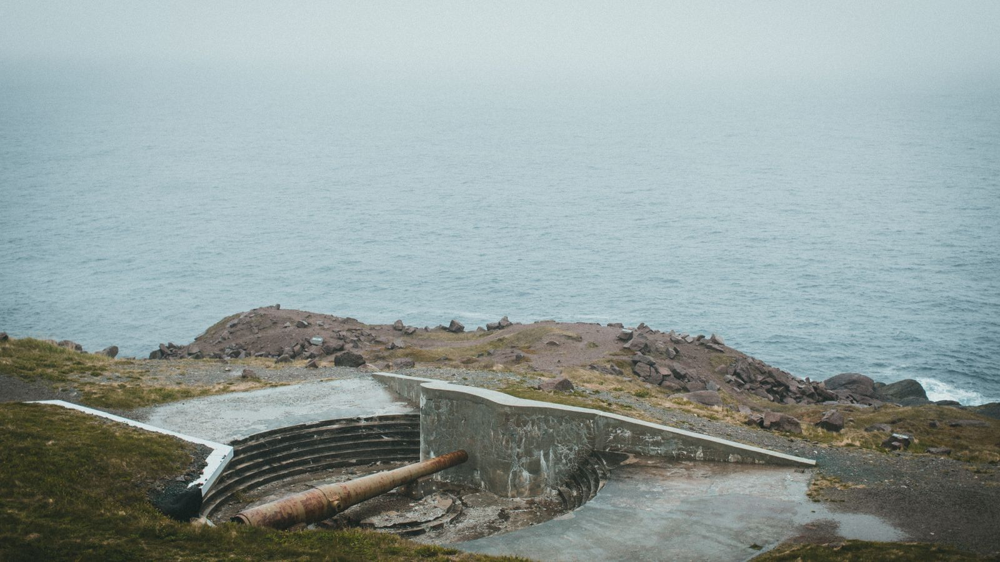

Chaque jour, un sujet qui compte, décortiqué en trois scénarios chiffrés, avec une probabilité pour chacun. Jamais figée : elle évolue si la situation change.

Scénario
Lundi, géopolitique
Islande : après le non à l'UE, qui va la protéger ?
Publié le 31 août 2026
Partager :
La question posée
Le 29 août, 52,8 % des Islandais ont rejeté la réouverture des négociations d'adhésion à l'Union européenne, alors que Donald Trump maintient la pression sur le Groenland voisin. Sans l'UE et sans armée propre, l'Islande peut-elle sécuriser durablement sa position dans l'Arctique en misant sur les États-Unis et l'OTAN, ou ce choix va-t-il l'isoler davantage face aux appétits stratégiques croissants sur la région ?
Les faits
Avant d'aller plus loin, un point sur le pays dont on parle : l'Islande est une île volcanique du Nord de l'Atlantique, entre le Groenland et la Norvège, à la frontière du cercle polaire — à peine 394 000 habitants, un peu plus que la ville de Nantes. Reykjavik, la capitale, en concentre près des deux tiers. C'est aussi un membre fondateur de l'OTAN, depuis 1949 — un détail qui compte pour la suite.
Le 29 août 2026, les Islandais ont voté lors d'un référendum consultatif* sur la reprise des négociations d'adhésion à l'Union européenne, gelées depuis 2013. Le « non » l'emporte avec 52,8 % des voix, contre 47,2 % pour le « oui » — un écart resserré, à l'image de sondages qui donnaient les deux camps au coude-à-coude jusqu'au bout. Ce vote ne portait pas sur l'adhésion elle-même, seulement sur la réouverture des discussions : un accord final aurait de toute façon nécessité un second référendum distinct.
Le paradoxe islandais, c'est qu'un « non » à l'UE ne coupe pas le pays de l'Europe. Depuis 1994, l'Islande fait partie de l'espace économique européen*, qui lui donne déjà accès au marché unique ; elle a aussi rejoint l'espace Schengen en 2001, avec libre circulation des personnes. Une adhésion complète irait plus loin : un siège au Conseil européen et au Parlement, plus l'accès à la clause de défense mutuelle propre à l'UE (article 42.7 du traité), en plus de l'OTAN.
La Première ministre Kristrún Frostadóttir, qui portait ce projet depuis son arrivée au pouvoir fin 2024, a dit respecter le résultat — tout en reconnaissant qu'un « non », même court, mettait fin au débat pour le reste de la législature. Le chiffre qui explique ce refus : les produits de la mer pèsent encore 21 % des exportations islandaises en 2024 — en baisse depuis 38,8 % en 2021, mais toujours assez pour que Reykjavik refuse d'en perdre le contrôle.
Comprendre
L'Islande accepte d'être « spectateur » sur presque toute son économie depuis 30 ans — mais refuse de l'être aussi sur la pêche.
Depuis 1994, l'Islande applique les règles du marché unique européen sans avoir de siège pour les voter — elle les subit, sans jamais s'en plaindre au point de vouloir l'UE. Une adhésion complète étendrait ce même statut à la pêche, aujourd'hui hors des règles européennes. C'est précisément ce que Reykjavik refuse : garder 100 % du contrôle sur son secteur vital, plutôt qu'une voix diluée à 27.
Mais ce référendum s'est joué dans un climat inédit : Donald Trump multiplie les pressions pour que les États-Unis prennent le contrôle du Groenland, l'île danoise voisine, au nom de la sécurité nationale. Une partie des partisans du « oui » présentaient l'adhésion à l'UE comme une protection possible si Washington en venait à faire pression sur l'Islande elle-même. Ce n'est pas un cas isolé : l'Islande est le seul pays de l'OTAN sans armée propre, sa défense reposant depuis 1951 sur un traité bilatéral avec les États-Unis.
Comprendre
La position de l'Islande compte plus que sa population : elle verrouille le passage entre l'Arctique et l'Atlantique.
Le pays se trouve sur le corridor maritime le plus court entre le Groenland, l'Islande et le Royaume-Uni : un verrou naval que les stratèges appellent le trou du GIUK*. Tout sous-marin russe qui veut rejoindre l'Atlantique nord doit passer par là, comme un pétrolier franchit le détroit d'Ormuz*. C'est pour ce couloir, pas pour son économie, que Washington protège l'Islande depuis 1951, sans jamais y stationner de troupes permanentes.
Depuis, Reykjavik a lancé sa toute première politique de défense nationale et promis d'augmenter ses dépenses liées à la sécurité — sans dire à quel rythme. L'enjeu, désormais, n'est plus l'adhésion à l'UE : c'est de savoir si l'Islande peut vraiment compter sur ses alliés pour sécuriser sa position dans l'Arctique, sans armée propre ni carte européenne à jouer. Le vrai risque n'est pas la solidité du traité de 1951 aujourd'hui, mais sa fiabilité dans la durée, à mesure que la pression américaine sur le Groenland voisin s'intensifie. Voilà pourquoi ce sujet se prête à trois scénarios chiffrés : soit le partenariat avec Washington et l'OTAN se renforce, soit la même dépendance se prolonge sans rien de nouveau, soit l'Islande se retrouve isolée par les pressions grandissantes sur sa région.
Les prochaines échéances
1Fin 2026 — Début des travaux à HelguvikLancement du chantier d'extension de la base de ravitaillement de l'OTAN, financé environ 67 millions de dollars par l'Alliance, pour doubler la capacité de stockage de carburant des avions alliés qui surveillent l'espace aérien islandais.
22029 — Livraison de l'extensionAchèvement prévu de l'infrastructure, censée soutenir des rotations aériennes alliées plus fréquentes autour de l'Islande.
3D'ici 2035 — Objectif de 1,5 % du PIBÉchéance fixée par l'OTAN pour que ses membres, Islande comprise, atteignent ce niveau de dépenses liées à la défense (résilience, infrastructures, cyber), en plus du volet militaire classique.
42028-2029 — Fin de la législature FrostadóttirLa Première ministre a déjà écarté toute nouvelle initiative sur l'adhésion à l'UE tant qu'elle reste au pouvoir.
Aucune de ces échéances ne referme le débat : elles fixent seulement le rythme auquel l'Islande devra prouver qu'elle peut assurer sa sécurité sans l'UE.
Dépenses de défense de l'Islande0 % du PIB Objectif fixé par l'OTAN : 1,5 % d'ici 2035
Soutien à une adhésion à l'UE47,2 % de « oui » Contre 52,8 % de « non », référendum du 29 août 2026
Favorable, stable ou dégradé
L'Islande peut-elle sécuriser sa position sans l'UE ?
Ce qu'on évalue
Est-ce que le partenariat avec les États-Unis et l'OTAN suffit à sécuriser durablement l'Islande ? Est-ce que le pays reste dans la même dépendance, sans garantie renforcée ? Ou se retrouve-t-il isolé, pris entre les pressions américaines sur le Groenland et une adhésion à l'UE désormais écartée ?
Favorable
30%
Probable
Les États-Unis et l'OTAN renforcent leur protection de l'Islande
Le gouvernement de Kristrún Frostadóttir accélère sa nouvelle politique de défense. Les dépenses liées à la sécurité progressent plus vite que prévu, portées par l'extension de la base de Helguvik et de nouveaux accords bilatéraux avec Washington. Les États-Unis réaffirment leur engagement issu du traité de 1951, malgré les tensions ouvertes par Donald Trump sur le Groenland voisin. L'OTAN confirme aussi son propre soutien financier aux infrastructures islandaises, dans la même logique.
C'est le scénario le moins probable des trois : il suppose que Washington traite l'Islande différemment du Groenland, alors que Donald Trump a déjà montré qu'il pouvait faire pression même sur un territoire allié. Il reste plus optimiste que le stable, qui prolonge simplement l'ambiguïté actuelle, et surtout que le dégradé, qui part d'une dégradation ouverte de la relation.
Indicateurs touchés
Dépenses de défense≈ 1,0-1,5 % du PIB↑(vs 0 %, 2026)
Soutien à l'adhésion UE≈ 35-40 % de « oui »↓(vs 47,2 %, 2026)
Concrètement en France
Une Islande davantage sécurisée par ses alliés solidifie tout le flanc nord de l'OTAN, où passent aussi les câbles sous-marins qui relient la France au reste du monde. ↑ Plutôt favorable pour la France.
Stable
45%
Probable
L'Islande reste dépendante des États-Unis, sans garantie renforcée
La situation n'évolue pas franchement. Le nouveau plan de défense islandais avance, mais lentement : les dépenses liées à la sécurité progressent à peine, et l'extension de Helguvik suit son calendrier sans accélération notable. Washington maintient sa présence tournante à Keflavik, comme depuis le retour des rotations alliées en 2014, sans nouvel engagement écrit. Aucune pression directe de Donald Trump sur l'Islande elle-même, mais aucune clarification non plus sur ce qui se passerait si le Groenland basculait.
C'est le scénario le plus probable des trois : il prolonge simplement la trajectoire déjà engagée — un plan de défense qui existe sur le papier mais avance lentement, une alliance américaine jamais rompue mais jamais non plus formalisée davantage. Plus probable que le favorable, qui suppose une accélération encore peu visible ; plus probable aussi que le dégradé, qui suppose une vraie rupture avec Washington.
Indicateurs touchés
Dépenses de défense≈ 0,2-0,5 % du PIB↑(vs 0 %, 2026)
Soutien à l'adhésion UE≈ 45-50 % de « oui »→(vs 47,2 %, 2026)
Concrètement en France
Le statu quo laisse la sécurité de l'Arctique nord reposer sur un accord bilatéral vieux de 75 ans, sans les garanties nouvelles que réclament les tensions sur le Groenland — une fragilité qui touche aussi les intérêts français dans la région (câbles sous-marins, recherche polaire). ↓ Plutôt défavorable pour la France.
Dégradé
25%
Peu probable
L'Islande se retrouve isolée face aux pressions sur le Groenland
Donald Trump durcit sa pression sur le Groenland voisin — nouvelles bases américaines annoncées, discours plus insistant sur un contrôle direct du territoire. L'Islande, seul pays de l'OTAN sans armée propre et dépendante d'un traité bilatéral vieux de 75 ans, se retrouve prise entre deux feux : trop petite pour peser sur Washington, sans l'UE comme filet de sécurité après le rejet du 29 août. Le financement de sa nouvelle politique de défense stagne, faute de majorité politique claire pour l'accélérer.
Ce scénario reste moins probable que le stable, car l'Islande garde un statut de membre fondateur de l'OTAN et un traité de défense toujours en vigueur avec les États-Unis, qui limite le risque d'un abandon pur et simple. Mais il est plus probable que le favorable : l'exemple du Groenland, voisin direct sous pression croissante, montre qu'un allié historique de Washington n'est plus à l'abri d'un rapport de force imposé par Donald Trump.
Indicateurs touchés
Dépenses de défense≈ 0 % du PIB→(vs 0 %, 2026)
Soutien à l'adhésion UE≈ 50-55 % de « oui »↑(vs 47,2 %, 2026)
Concrètement en France
Un flanc nord de l'OTAN affaibli et des tensions ravivées avec Washington fragiliseraient la cohésion de toute l'alliance, y compris la posture française en Europe du Nord. ↓ Plutôt défavorable pour la France.
Ordres de grandeur indicatifs pour les 3 scénarios ci-dessus, estimés avec l'information disponible à la publication et réévalués si la situation change — jamais des prévisions garanties. En savoir plus sur notre méthode →
L'essentiel
Après avoir dit non à l'UE, l'Islande peut-elle sécuriser durablement sa place dans l'Arctique en misant sur les États-Unis et l'OTAN ?
Le 29 août, 52,8 % des Islandais ont rejeté la réouverture des négociations d'adhésion à l'Union européenne, dans un climat tendu par la pression de Donald Trump sur le Groenland voisin.
Le scénario le plus probable (45 %) : l'Islande reste dans la même dépendance à un traité de défense américain vieux de 75 ans, sans garantie nouvelle malgré les tensions grandissantes sur l'Arctique.
Signal à surveiller : le calendrier réel des travaux d'extension de la base OTAN de Helguvik, prévus fin 2026, et toute nouvelle annonce américaine sur le Groenland dans les prochains mois.
Léger négatif
Notre évaluation de l'impact pour la France : léger négatif. Les deux scénarios les plus probables à eux deux (70 %, stable et dégradé) laissent l'Arctique nord dans une sécurité fragile ou dégradée, contrebalancés par le scénario favorable (30 %) qui reste minoritaire.
Un vote dont le résultat n'oblige pas légalement le gouvernement à agir, mais qu'il s'engage politiquement à respecter.
EEE (Espace économique européen)
Un accord qui donne à des pays hors UE (Islande, Norvège, Liechtenstein) l'accès au marché unique européen, sauf pour l'agriculture et la pêche.
GIUK
Le corridor maritime entre le Groenland, l'Islande et le Royaume-Uni (l'acronyme de ces trois noms), un point de passage stratégique surveillé par l'OTAN pour repérer les sous-marins qui entrent dans l'Atlantique nord.
Détroit d'Ormuz
Le passage maritime entre le golfe Persique et l'océan Indien, par où transite près d'un cinquième du pétrole mondial — un précédent souvent cité pour illustrer un « point de passage » stratégique comparable au trou du GIUK.
Chaque jour, un sondage sur notre canal Telegram : vote pour le scénario que tu juges le plus probable avant même de découvrir les vraies probabilités ci-dessus.